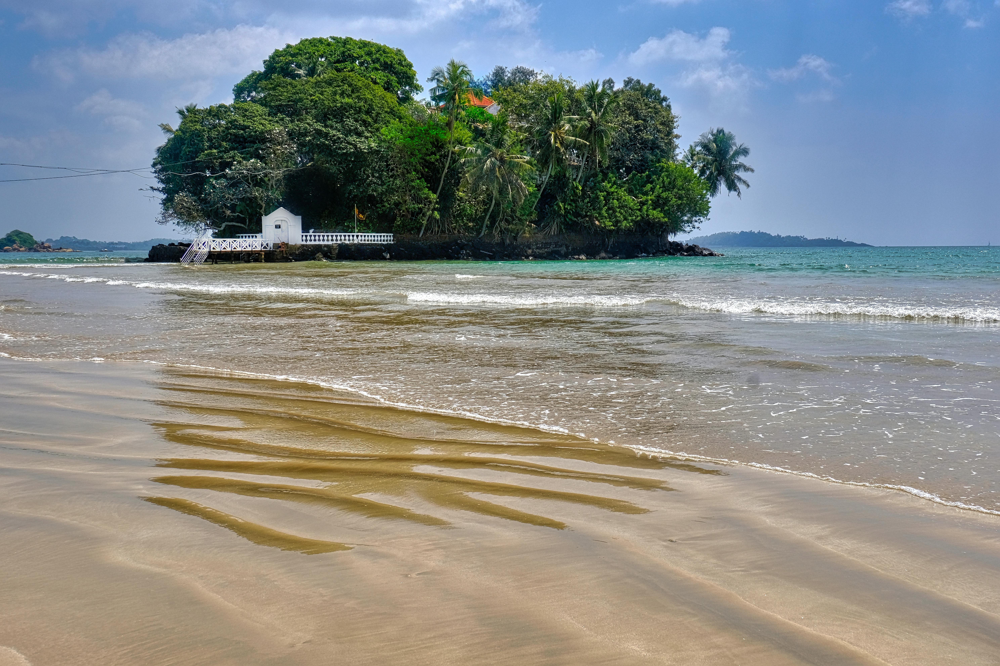
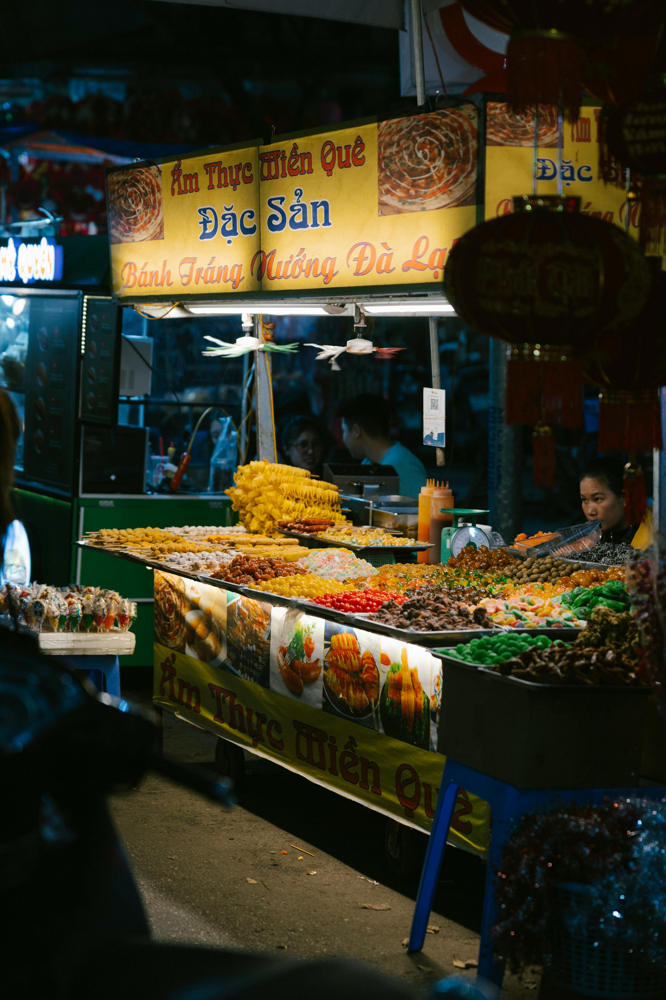
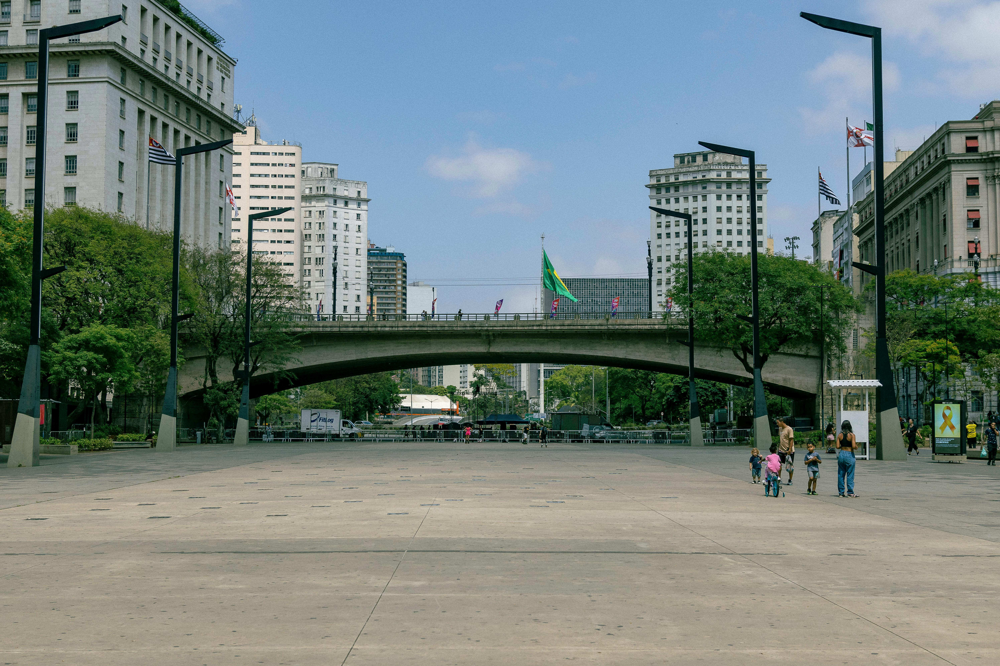
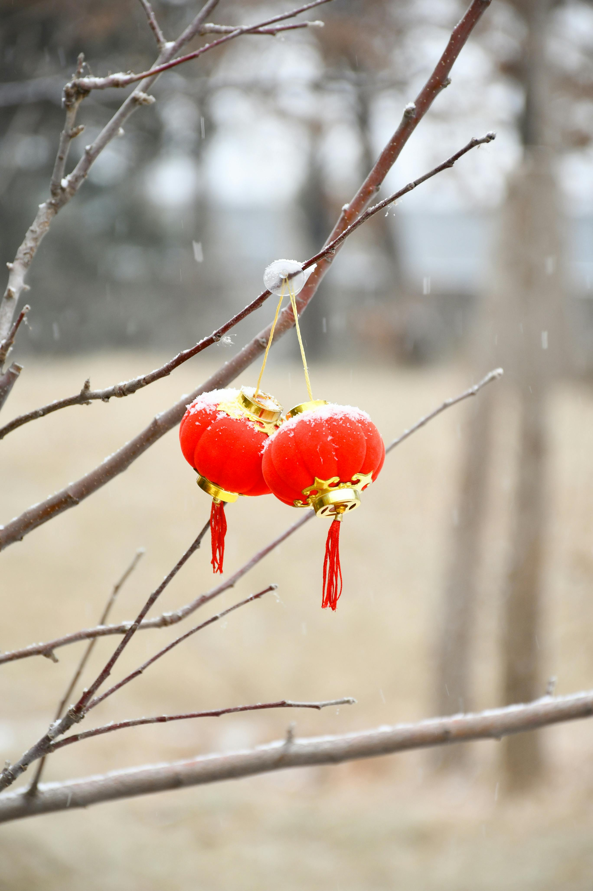
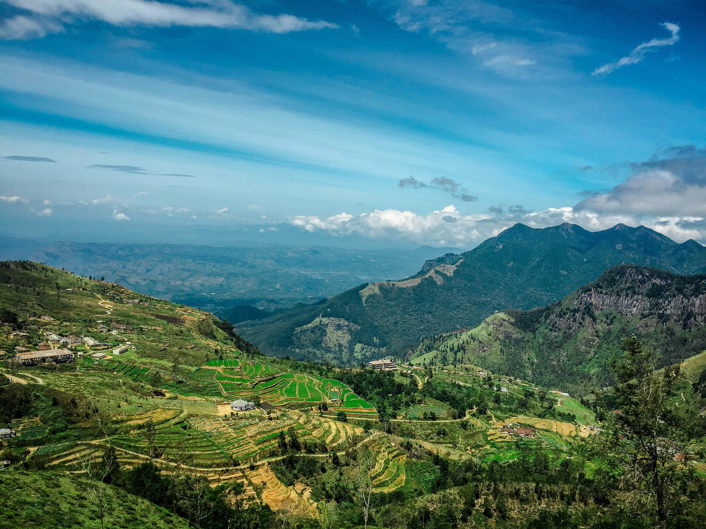
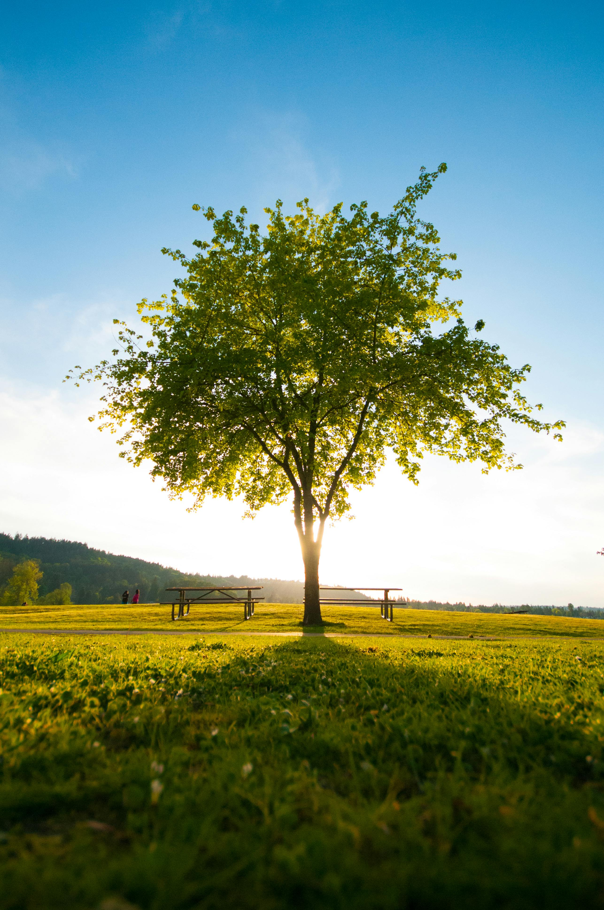

Best Travel Tips

- Best Time to Visit: December to March for pleasant weather; April to September for coastal areas.
- Transportation: Use public buses and trains; taxis and tuk-tuks are available for local travel.
- Language: Sinhala and Tamil are the official languages; English is commonly spoken in tourist areas.
- Currency: Sri Lankan Rupee (LKR); cash is preferred in rural areas.
- Health & Safety: Sri Lanka is generally safe; travel insurance is recommended.
Best Cuisines and Dining Recommendations

- Rice and Curry: A staple dish with a variety of curries and sides.
- Hoppers: Bowl-shaped pancakes made from fermented rice flour.
- Fish Ambul Thiyal: A sour fish curry, a specialty of Sri Lanka.
- Kottu Roti: Chopped roti stir-fried with vegetables and meat.
- Watalappam: A traditional coconut custard pudding.
Best Accommodation Options

- Luxury Hotels: High-end resorts in Colombo and Galle.
- Beach Bungalows: Cozy bungalows along the southern coast.
- Eco-Lodges: Sustainable stays near national parks.
- Guesthouses: Affordable local stays in towns and villages.
Best Local Culture and Traditions

- Religious Festivals: Vibrant celebrations like Vesak and Sinhala New Year.
- Traditional Dance: Kandyan dance and various folk performances.
- Crafts: Handicrafts like batik and pottery.
- Tea Culture: Experience tea plantation tours in the hill country.
- Ayurvedic Practices: Traditional medicine and wellness treatments.
Best Top Tourist Attractions

- Sigiriya Rock Fortress: Ancient rock fortress and UNESCO World Heritage site.
- Temple of the Tooth: Sacred Buddhist site in Kandy.
- Yala National Park: Famous for its wildlife and leopard sightings.
- Galle Fort: Historical fort with colonial architecture.
- Ella: Scenic town with stunning views and hiking trails.
Best Transportation Guides
- Public Transport: Buses and trains connect major cities and attractions.
- Tuk-Tuks: Convenient for short distances and local travel.
- Car Rentals: Recommended for exploring remote areas.
- Airport Transfers: Various shuttle services from Bandaranaike International Airport.
Best Outdoor Activities and Adventure

- Wildlife Safaris: Explore national parks like Yala and Udawalawe.
- Hiking: Trails in the Knuckles Mountain Range and Adam's Peak.
- Surfing: Beaches like Arugam Bay are popular among surfers.
- Snorkeling and Diving: Discover marine life in Hikkaduwa and Pigeon Island.
- Tea Plantation Tours: Experience the lush tea estates in Nuwara Eliya.
Best Weather and Best Time to Visit

- Dry Season (Dec-Mar): Best time to visit the west and south coasts.
- Wet Season (May-Oct): Best for visiting the hill country and east coast.
- Temperature: Tropical climate, temperatures range from 25°C to 30°C (77°F to 86°F).
- Humidity: Generally high, especially in coastal areas.